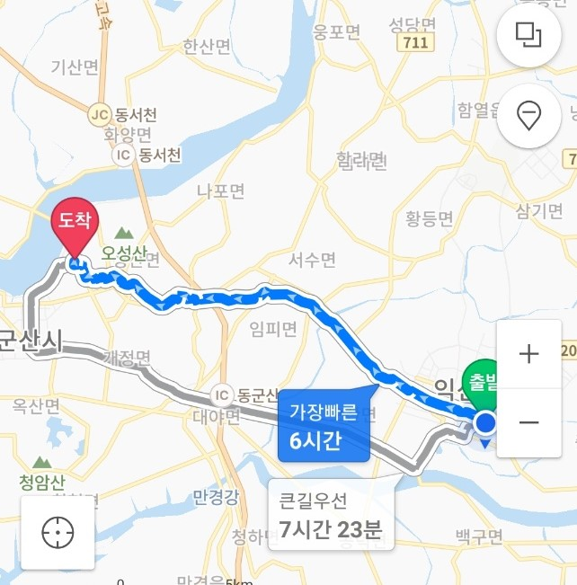
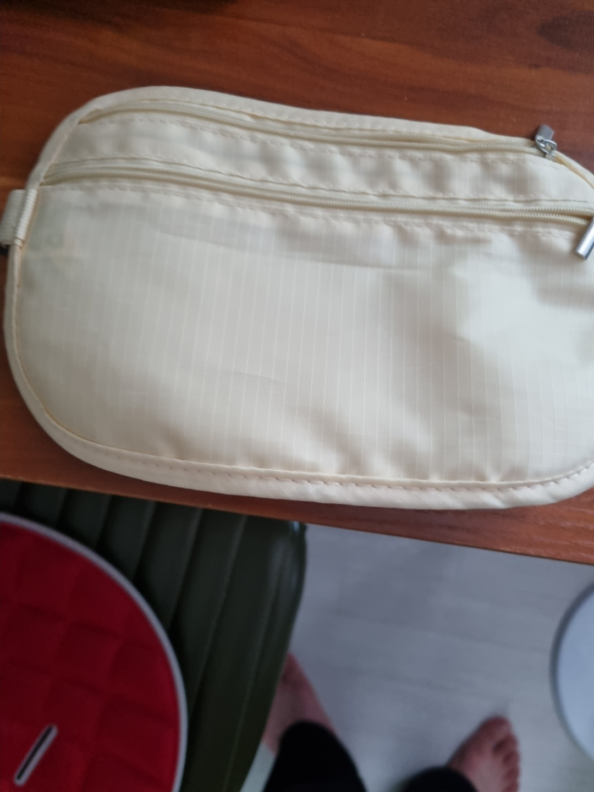
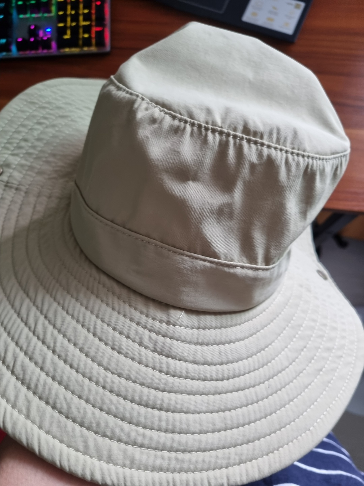

익산에서 군산까지 걸어가기
여행일시:2021-08-20 07:13 ~ 13:50
제1장 : 준비
어느 날 갑자기 '익산에서 군산까지 걸어가면 어떨까?'라는 미친 생각이 들었고 나는 바로 실행에 옮기기 시작했다. 첫 번째는 목표를 잡는 것이었다. 나는 우리 집에서 군산역까지 가는 것을 목표로 삼았다. 그리고 네이버 지도를 통해 얼마나 걸리는지를 검색을 해보았다. 총 6시간이 걸렸고 나는 이쯤이야 하는 생각으로 2일 뒤인 8월 20일에 가야지라고 마음을 먹었다.
하루 전인 8월 29일은 만만의 준비를 위해 다이소에서 필요한 물품을 샀다. 총 3가지를 샀다.
 
보이는 것과 같이 하나는 지금부터 많이 보게 될 탐험가 모자고 하나는 짐을 간소화하기 위한 허리에 찰 수 있는 주머니고 나머지 하나는 사진은 없지만 혹시 저녁에도 걸을 수 있어서 헤드라이트를 샀다. 모자와 주머니는 나름 색깔을 맞춘 것이다.
나는 내일을 위해 11시에 잠을 청했고 6시에 일어나 아침밥으로 삼겹살에 밥을 한 공기 뚝딱하고 다이소에서 산 주머니에 신분증, 보조배터리, 버즈, 핸드폰, 선크림만 넣고 가볍게 출발했다.

그러면 출발~~